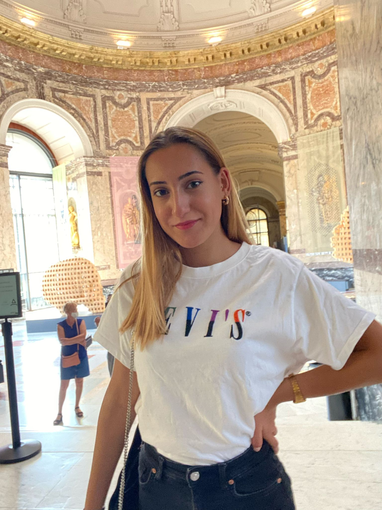

Who am I?
My name is Cagla Kizildag, I'm 19 years old and I live in Brussels, Belgium. I'm interested in the new media and marketing.
My studies
At the secondary school I studied the first 4 years Latin then I changed from school and I went to a business school, there I studied my 2 years about Business Economy.
Now, I'm studying Multimedia and Creative Technology at the Erasmushogeschool Brussels.
My language skills
In this paragraph I will let you know about my language skills.
Turkish is my mother tongue, so the first language I heared was Turkish.
I always went to school in Dutch, so i can use the Dutch language very good!
Since I was 9 years old, I learned the French language. I can use the basic French language but at the grammer I'm not very good at it.
When I was at the secondary school, I learned English and it was my favorite subject at the secondary school.
On my last 2 years at the secondary school I learned German.
Si, hablo Espagnol! I'm nowadays also learing Spanish!
I also want to learn Greek, Russian and Polish.
My work experiences
I did 3 week an internship at a tiles company called Giovanni Tiles in Vilvoorde.
Since august, I work in a daycare as a childcare worker
I love doing make-up very much, I'm also a freelance make-up artist.
My dreams
Now let's talk a little bit about my dreams!
First things first, I'm a big Harley Davidson fan, so my biggest dream is to do a touring in Europe with my Harley!
My another dream is to open my own make-up studio and not only in Belgium, but in different countries!
I also want to get my own company, being famous with my company and working with different brands that are famous.
More information about myself
In my free time I like to watch sitcoms, surfing on the internet and going to the gym. When I'm with my friends we like to hang out and to drink something!I'm also addicted to shopping I like and love shopping a lot. My favorite animal is a squirrel. I'm always happy when I'm eating good food.